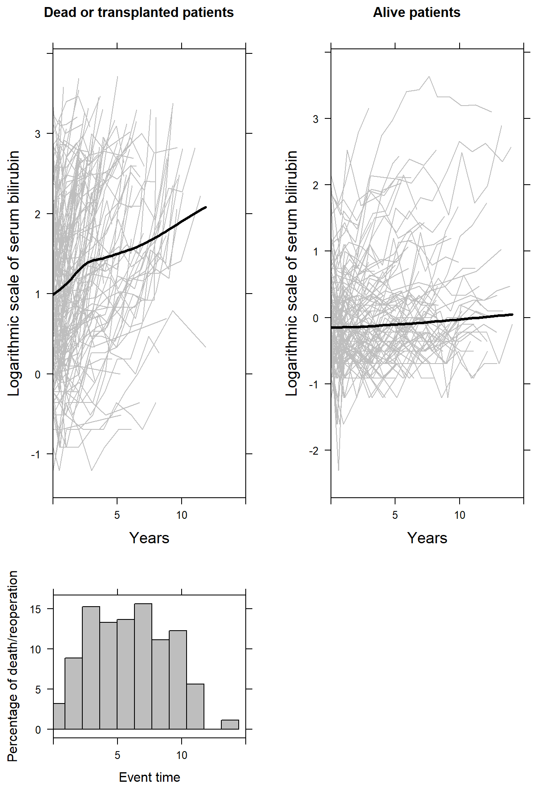

The pbc2 and pbc2.id data sets are used from the JMbayes package in R. The long format data set is called pbc2:
head(pbc2) id years status drug age sex year ascites hepatomegaly spiders edema serBilir
1 1 1.09517 dead D-penicil 58.76684 female 0.0000000 Yes Yes Yes edema despite diuretics 14.5
2 1 1.09517 dead D-penicil 58.76684 female 0.5256817 Yes Yes Yes edema despite diuretics 21.3
3 2 14.15234 alive D-penicil 56.44782 female 0.0000000 No Yes Yes No edema 1.1
4 2 14.15234 alive D-penicil 56.44782 female 0.4983025 No Yes Yes No edema 0.8
5 2 14.15234 alive D-penicil 56.44782 female 0.9993429 No Yes Yes No edema 1.0
6 2 14.15234 alive D-penicil 56.44782 female 2.1027270 No Yes Yes No edema 1.9
serChol albumin alkaline SGOT platelets prothrombin histologic status2
1 261 2.60 1718 138.0 190 12.2 4 1
2 NA 2.94 1612 6.2 183 11.2 4 1
3 302 4.14 7395 113.5 221 10.6 3 0
4 NA 3.60 2107 139.5 188 11.0 3 0
5 NA 3.55 1711 144.2 161 11.6 3 0
6 NA 3.92 1365 144.2 122 10.6 3 0The wide format data set is called pbc2.id.
head(pbc2.id) id years status drug age sex year ascites hepatomegaly spiders edema
1 1 1.095170 dead D-penicil 58.76684 female 0 Yes Yes Yes edema despite diuretics
2 2 14.152338 alive D-penicil 56.44782 female 0 No Yes Yes No edema
3 3 2.770781 dead D-penicil 70.07447 male 0 No No No edema no diuretics
4 4 5.270507 dead D-penicil 54.74209 female 0 No Yes Yes edema no diuretics
5 5 4.120578 transplanted placebo 38.10645 female 0 No Yes Yes No edema
6 6 6.853028 dead placebo 66.26054 female 0 No Yes No No edema
serBilir serChol albumin alkaline SGOT platelets prothrombin histologic status2
1 14.5 261 2.60 1718 138.0 190 12.2 4 1
2 1.1 302 4.14 7395 113.5 221 10.6 3 0
3 1.4 176 3.48 516 96.1 151 12.0 4 1
4 1.8 244 2.54 6122 60.6 183 10.3 4 1
5 3.4 279 3.53 671 113.2 136 10.9 3 0
6 0.8 248 3.98 944 93.0 NA 11.0 3 1p1 <- xyplot(log(serBilir) ~ year, groups = id,
data = pbc2[pbc2$status %in% c("dead", "transplanted"), ], xlim = c(0, 15),
col = "grey", lwd = 1, type = "l",
ylab = list(label = "Logarithmic scale of serum bilirubin", cex = 1.2),
xlab = list(label = "Years", cex = 1.2),
main = list(label = "Dead or transplanted patients", cex = 1.04),
panel = function(x, y,...) {
panel.xyplot(x, y, ...)
panel.xyplot(pbc2$year[pbc2$status %in% c("dead", "transplanted")],
log(pbc2$serBilir[pbc2$status %in% c("dead", "transplanted")]),
col = 1, lwd = 3, type = "smooth")
})
p2 <- xyplot(log(serBilir) ~ year, groups = id,
data = pbc2[pbc2$status %in% c("alive"), ], xlim = c(0, 15),
col = "grey", lwd = 1, type = "l",
ylab = list(label = "Logarithmic scale of serum bilirubin", cex = 1.2),
xlab = list(label = "Years", cex = 1.2),
main = list(label = "Alive patients", cex = 1.04),
panel = function(x, y,...) {
panel.xyplot(x, y, ...)
panel.xyplot(pbc2$year[pbc2$status %in% c("alive")],
log(pbc2$serBilir[pbc2$status %in% c("alive")]),
col = 1, lwd = 3, type = "smooth")
})
p3 <- histogram(~pbc2[pbc2$status %in% c("dead", "transplanted"), "years"], data = pbc2,
type = "percent", xlim = c(0, 15),
xlab = "Event time", ylab = "Percentage of death/reoperation",
main = "", col = "grey")
print(p1, position=c(0, 0.3, 0.5, 1), more=TRUE)
print(p2, position=c(0.5, 0.3, 1, 1), more=TRUE)
print(p3, position=c(0, 0, 0.5, 0.3))
fit_linear <- lme(serBilir ~ year, random = ~ year | id, data = pbc2)
fit_nonlinear <- lme(serBilir ~ ns(year, 3), random = list(id = pdDiag(form = ~ ns(year, 3))), data = pbc2)
pbc2$fitted_linear <- fitted(fit_linear)
pbc2$fitted_nonlinear <- fitted(fit_nonlinear)
newdata <- pbc2[pbc2$id %in% c(128, 142, 46, 57, 216, 93, 114, 120, 294), ]
xyplot(serBilir ~ year | id, data = newdata, pch = 20,
subscripts = TRUE, col = 1, lwd = 3, strip = FALSE, cex = 1.5,
ylab = list(label = "Serum bilirubin", cex = 1.2),
xlab = list(label = "Years", cex = 1.2),
panel = function(x, y, subscripts = subscripts,...) {
panel.xyplot(x, y, subscripts = subscripts, ...)
panel.lines(newdata$year[subscripts], newdata$fitted_linear[subscripts],
col = "red", lwd = 4, lty = 1)
panel.lines(newdata$year[subscripts], newdata$fitted_nonlinear[subscripts],
col = "blue", lwd = 4, lty = 2)
})re# Survival outcome
fit <- survfit(Surv(years, status2) ~ 1, data = pbc2.id)
ggsurvplot(fit, data = pbc2.id, risk.table = TRUE, palette = "black", legend = "none")© Eleni-Rosalina Andrinopoulou